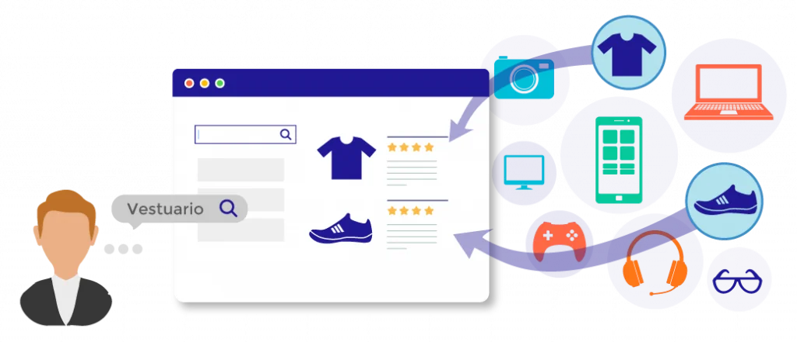
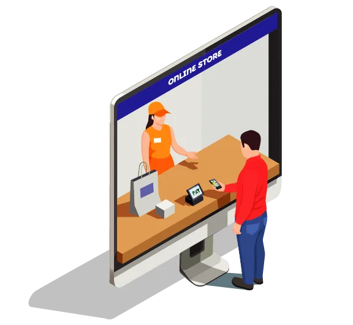
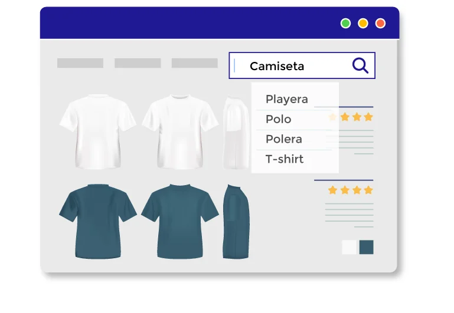

Con IFindIT ofrézcale a sus clientes
justo lo que buscan en su plataforma,
mientras conoce sus tendencias
de consumo casi instantáneamente.
Conecte sus productos
con los clientes precisos.
Hay millones de clientes para los productos de su catálogo, no pierda ventas por ofrecer la experiencia genérica de ventas a todos los clientes, IFindIT determina con unos pocos clics el interés de cada cliente y lo conduce a la compra; Hay un comprador para cada producto y IFindIT los conecta fácilmente.
Con Ifindit, el artículo preciso al 100% de los clientes, en lugar del 100% del catálogo a un cliente.
Personalice su tienda y los resultados de búsqueda a partir de las interacciones de sus clientes con el catálogo, es decir, ofrezca experiencias personalizadas para cada cliente, respondiendo a los intereses que IFindIT aprende de ellos desde el inicio; si su cliente quiere vestuario, IFindIT no le presenta el catálogo de celulares, le conduce al resultado preciso y nutre la venta con productos relacionados.

Conduzca a sus clientes al producto exacto que buscan.
La única opción para mostrarle al cliente sus productos es un sistema de búsqueda. IFindIT no es buscador ordinario, es una potente herramienta de comercio que conecta las necesidades de sus consumidores con los productos que usted tiene para ofrecer.
Ofrezca aún más productos en cada venta: IFindIT potencia la venta cruzada sugiriendo productos relacionados y recomendaciones colaborativas del entorno social del cliente.

No pierda clientes al ofrecerles lo que no están buscando
Su catálogo estará completamente expuesto pues cada artículo será visto por el cliente correcto. Ofrezca una experiencia de venta personalizada y exitosa dando acceso a miles de ítems mientras enriquece su catálogo añadiendo nuevas búsquedas de sus clientes; no hay mejor alternativa para ofrecer un catálogo óptimo y eficiente para su negocio que IFindIT.
IFindIT se aproxima a la lectura de mente mediante tecnologías de asociaciones, es decir que la navegación y los resultados se van mejorando mientras sus compradores usan su sitio. Sepa lo que quieren y venda anticipándose al mercado.
Manejo de lenguaje
No es necesario que sus clientes sepan los nombres de los productos, IFindIT entiende el lenguaje común y presenta justo lo que el usuario busca.
Tendencias
Analice de manera global lo que la gente opina en redes sociales o en el feedback de su sitio.
Visualice de manera sencilla toda la complejidad de su negocio
IFindIT le permite conocer las interacciones con sus consumidores mediante tableros de control, diseñados para para leer grandes volúmenes de datos y tendencias de mercado actualizadas casi instantáneamente; sin duda la mejor herramienta para su fuerza de ventas.
